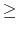

Mr. Kim knows that the residents of the two apartments frequently have a meeting. So, he thinks that the best location of a new restaurant is halfway between two apartments. Considering lease expenses and existing restaurants, however, he can't select the optimal location unconditionally. Hence he decides to regard a location satisfying the following condition as a good place. Let dist(p, q) be the distance between p and q.
A location p is a good place if for each existing restaurant's location q, dist(p, A) < dist(q, A) or dist(p, B) < dist(q, B). In other words, p is not a good place if there exists an existing restaurant's location q such that dist(p, A)dist(q, A) and dist(p, B)dist(q, B).
In the above figure, the location (7, 4) is a good place. But the location p = (4, 6) is not good because there is no apartment which is closer to p than the restaurant at q = (3, 5), i.e., dist(p, A) = 5dist(q, A) = 3 and dist(p, B) = 7dist(q, B) = 7. Also, the location (0, 0) is not good due to the restaurant at (0, 5). Notice that the existing restaurants are positioned regardless of Mr. Kim's condition.
Given n locations of existing restaurants, write a program to compute the number of good places for a new restaurant.
Your program is to read the input from standard input. The input consists of T test cases. The number of test cases T is given in
the first line of the input. Each test case starts with a line containing two integers M and
n (
2 M
M 60, 000 and
2
60, 000 and
2 n
n 50, 000), which
represent the size of a city map and the number of existing restaurants, respectively. The (i + 1)-th line of a test case contains
two integers xi and yi (
i = 1, 2,..., n and
0
50, 000), which
represent the size of a city map and the number of existing restaurants, respectively. The (i + 1)-th line of a test case contains
two integers xi and yi (
i = 1, 2,..., n and
0 xi, yi < M), which represents the coordinate of the i-th
existing restaurant. Assume
that all restaurants have distinct coordinates and that the two apartments A and B are positioned at the locations of 1-st restaurant
and 2-nd restaurant. Notice that A and B are placed on the same horizontal line.
xi, yi < M), which represents the coordinate of the i-th
existing restaurant. Assume
that all restaurants have distinct coordinates and that the two apartments A and B are positioned at the locations of 1-st restaurant
and 2-nd restaurant. Notice that A and B are placed on the same horizontal line.
Your program is to write to standard output. Print exactly one line for each test case. Print the number of good places which can be found in a given city map.
The following shows sample input and output for two test cases.
2 6 3 1 3 4 3 0 2 11 11 0 5 10 5 4 9 2 8 7 8 5 6 3 5 5 3 3 2 7 2 9 1
2 16